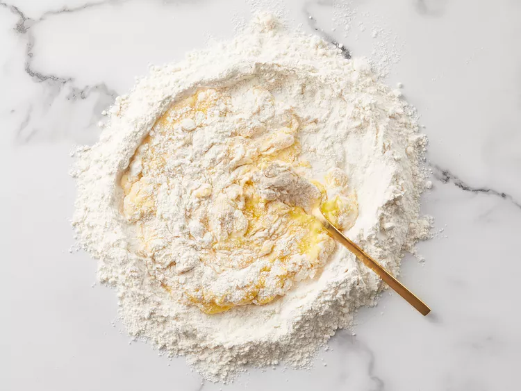
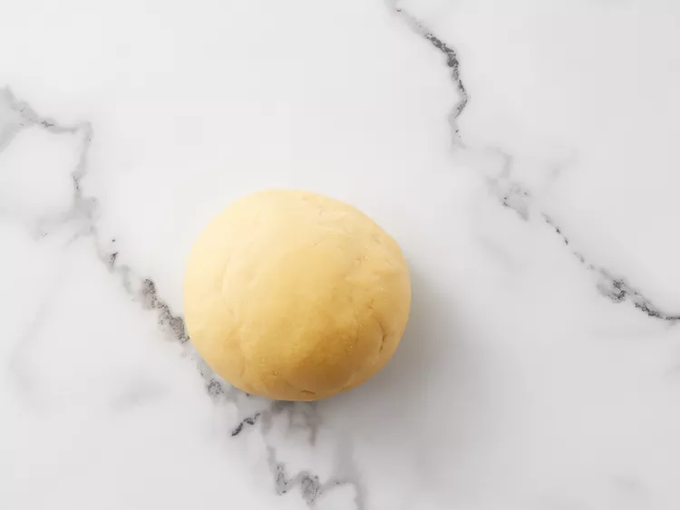
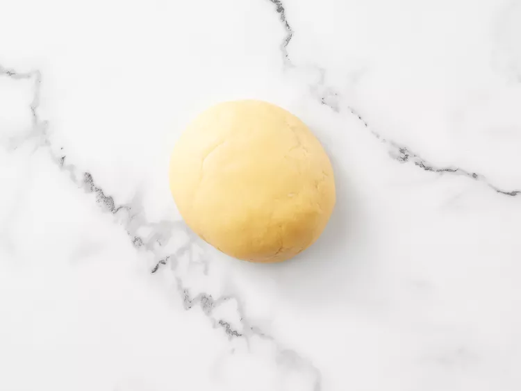
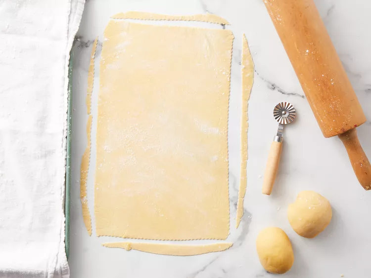

Homemade lasagna noodles are easier to make than you think and you don't even need a pasta machine. And forget about blanching the sheets before baking — no precooking is required!
Gather all ingredients.

Place flour on a marble or wooden work surface. Make a well in the center and crack in eggs; add salt.

Gently beat eggs using a fork, incorporating surrounding flour, until mixture is runny. Bring remaining flour into the mixture using a bench scraper until dough forms a ball. Mix in water, 1 tablespoon at a time, if dough feels too stiff.


Knead dough with your hands by flattening, stretching it, and folding the top towards the center. Turn 45 degrees and repeat until dough is soft and smooth, about 10 minutes.
Shape dough into a ball. Place in a bowl and cover with plastic wrap. Refrigerate until firm, 30 minutes to 1 hour.
Divide dough into 3 equal portions. Take one piece and flatten it a bit with your hands. Dust a work surface with flour and roll dough out using a rolling pin 5 to 6 times. Turn dough 45 degrees and roll out again, 5 to 6 times. Keep rolling and turning in the same way until dough is evenly very thin. When you hold up the dough, you should be able to see your fingers through it.

Cut pasta dough into rectangular sheets to fit your baking dish using a pastry wheel or a knife. Transfer lasagna sheets to a floured kitchen towel and let air-dry for about 30 minutes before assembling.
Other Recipes:
World's Best Lasagna Click here
To Die For Fettuccine Alfredo: Click here
Menu: Click Here to go to the menu